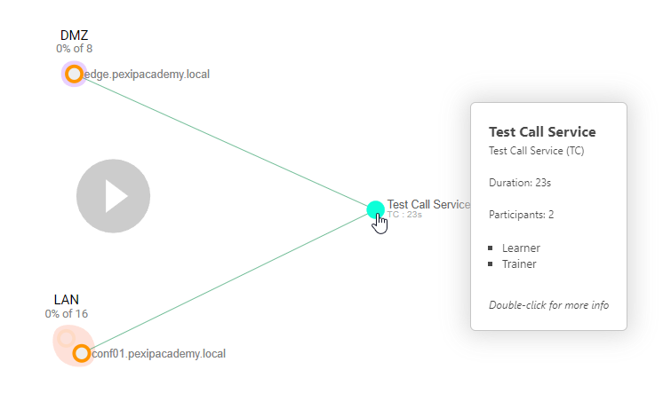
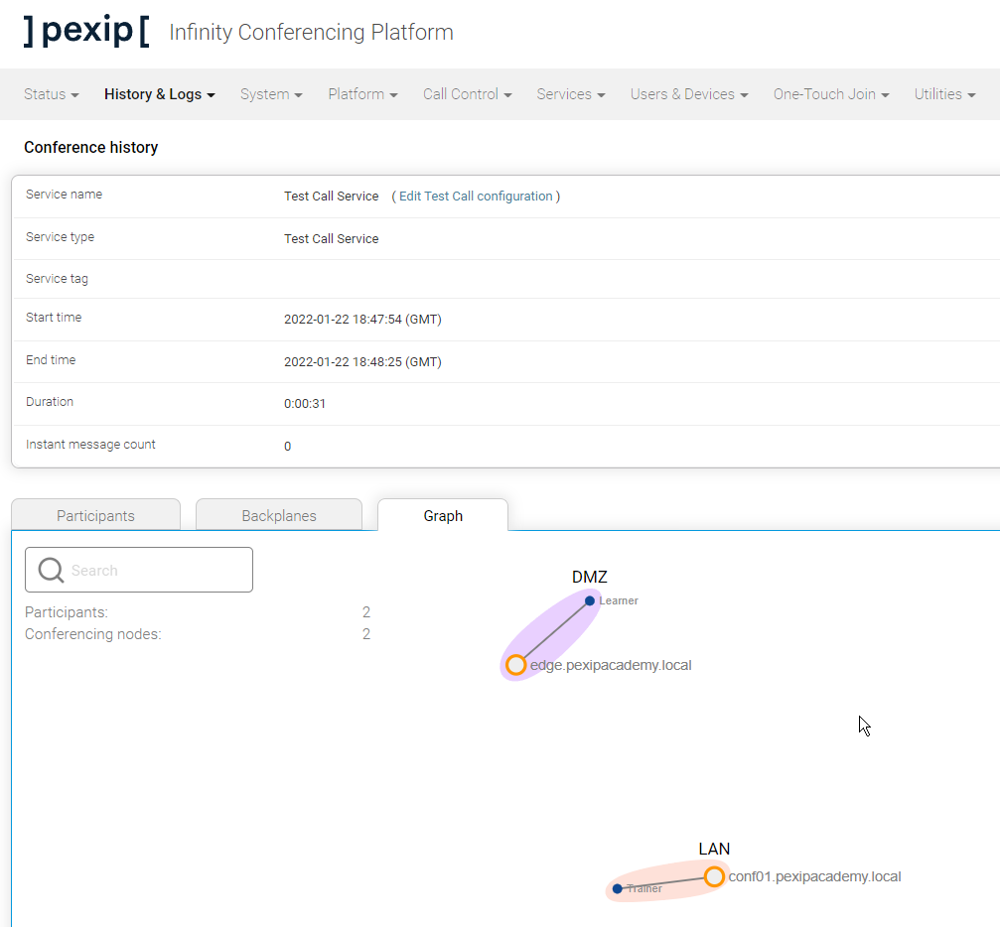
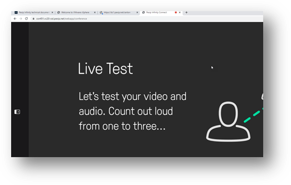
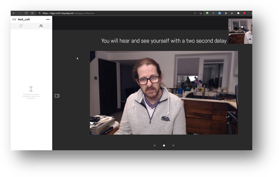

Suggested completion time: 15 minutes
Use section #4.2 of the lab sheet.
To edit the pre-existing Test Call Service, go to Services --> Test Call Service:
Connect to the Test Call Service by dialling testcall@<Pexip Infinity domain from an endpoint, or simply testcall from a WebRTC client.
Place calls into the Test Call service from different endpoints. For example, ensure you place at least one call through the LAN location and another call into the same service is through the DMZ location. If you can do this simultaneously, brilliant, but you only have 30 seconds to place both calls and view the results in Live View.
Check the screenshots below to see if your deployment shows similar results. Then, in Live View, drill down into the Test Call services, but you need to be quick as these calls only last a short while. However, even if you miss the calls showing in Live View in real-time, you can use the timeline feature (at the bottom of Live View) to go back in time. Also, check out how things look from the end user's point of view.
Try to understand what the Live View graph shows. For example, two users have connected to a single Test Call service. Each user will NOT see each other, but Infinity recognises that both users connect using an alias defined in the service. In this case, one user has connected to the edge node, and another has connected to an internal node. It is not clear from this image which user has connected to where, so we can drill down into the service ball to see what is happening (see next image).

This Live View graph shows the individual users connected to the Test Call service simultaneously, and the Conferencing Nodes used to handle their media. Try hovering over different elements on the graph, such as the line connecting the participant to the Conferencing Node, which shows perceived call quality and packet loss overview. You can drill down further by double-clicking on a participant to see more detail about this specific call leg. In addition, clicking on the Participants tab shows more information about all participants connected to the service, where you can also drill down into individual call details.

